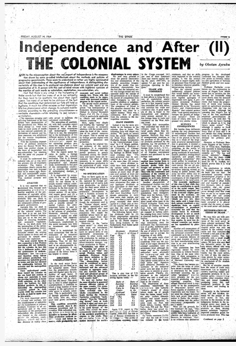
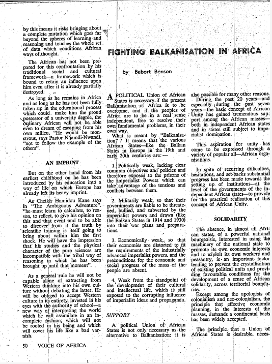
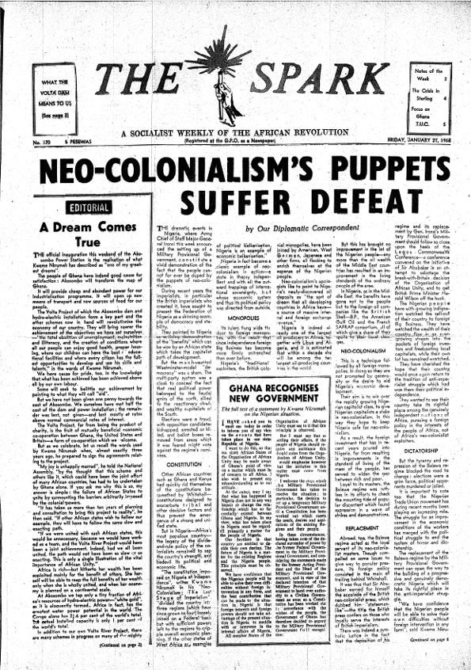
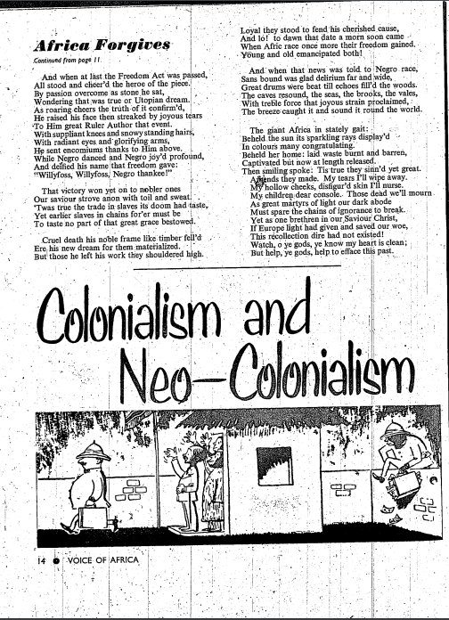
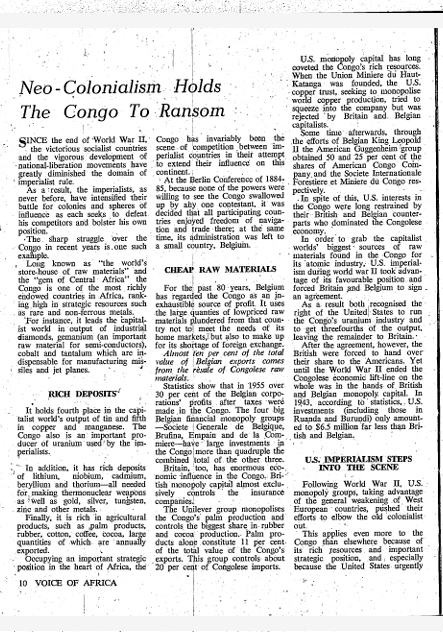

Néocolonialisme politique:
Un outil d'influence
Dès les décolonisations en Afrique, les nouveaux États-nations font face à un défi de taille. Tout en ayant été les victimes des desseins coloniaux, les États africains doivent désormais faire face au défi de construire leur nation. Qui plus est, la France n’est pas totalement détachée de ses ex-colonies, ce qui ajoute une couche de complexité à la période de décolonisation.
Afin de maintenir des liens privilégiés, l’Élysée fait usage d’abord des mécanismes de la coopération, qui permettent de protéger sa présence, ses intérêts en Afrique de même que son influence. Au même moment, la France s’assure de maintenir son accès privilégié aux ressources naturelles en Afrique. La relation qui se dessine prend l’allure d’une « toile d’araignée », avec, au cœur, les intérêts et l’influence de la France.
La coopération: un tremplin néocolonial
Dépendance: le truchement des accords de coopération
1956, 1958 puis 1960 : trois années clés dans l’établissement du néocolonialisme français en Afrique de l’Ouest. La Loi-cadre Defferre, la Communauté puis la coopération révèlent un élément invariable et une première facette du néocolonialisme politique : la recherche du maintien de la relation de dépendance des États africains avec la France. Selon Sékou Touré, les régimes de la loi-cadre (1956) et de la communauté (1958) symbolisent la création de « régimes couvés par l’impérialisme ».
Constatons la méfiance de Touré à l’égard de ces deux régimes que la France souhaite installer avant d’en arriver à la décolonisation. Cela n’est pas sans rappeler les paroles de Touré qui, devant de Gaulle et une foule immense rassemblés à Conakry à la veille du référendum de 1958, lance d’un ton déterminé :
« nous préférons la pauvreté dans la liberté à la richesse dans l’esclavage ».Sékou Touré, lors du référendum de 1958 à Conakry, Guinée.
Pour sa part, Nkrumah va directement au point : il dit explique que le néocolonialisme politique français, lors de la décolonisation, souhaite institutionnaliser la dépendance des États africains. La conception du duo s'approche de la réalité, puisque la France, lors de l'octroi de l'indépendance, fait des accords de coopération une condition sine qua non. C’est d’ailleurs dans le discours du Premier ministre français Michel Debré, qui considère que : « [la France] donne l’indépendance à condition que l’État, une fois indépendant, s’engage à respecter les accords de coopération signés antérieurement ».
Toutefois, comme le remarque le collectif de L’Empire qui ne veut pas mourir, la France concède les indépendances tout en encadrant la limite de leurs souverainetés grâce à la coopération. Cet encadrement réalisé à travers la coopération permet donc le maintien d’une situation de dépendance.
Au tournant des années 1970, les premiers accords de coopération – obligatoires pour l’obtention de l’indépendance en 1960 – font peau neuve. la France fait miroiter une autonomie, tel que le duo Touré/Nkrumah suppose, où l’autorité française est perceptible tant dans les institutions que dans les symboles. Cependant, malgré tout, la France octroie bel et bien les indépendances. C’est pourquoi Nkrumah juge difficile d'identifier ce néocolonialisme politique, considérant les concessions faites par la France. C’est ce qui amène le Ghanéen à effectuer une analyse au second degré de la coopération, car « sous la surface étincelante, il y a le “plomb vil”. Seules les formes extérieures auront changé : la relation fondamentale sera maintenue […]». La « relation fondamentale » se caractérise par une situation de dépendance, maintenue grâce à la coopération, estime Nkrumah:
Mais toute l’histoire de l’aide n’est pas contenue dans ces chiffres, car ils sont assortis de conditions : la conclusion de traités de commerce ou de navigation; des accords de coopération économique; le droit d’intervenir dans les finances intérieures (y compris en ce qui concerne la monnaie et le commerce extérieur), d’abaisser les barrières douanières en faveur des biens et du capital de la nation prêteuse; de protéger les intérêts des investissements privés, de déterminer l’utilisation des fonds; le droit de forcer le bénéficiaire à réunir des fonds en contrepartie; l’obligation de fournir au prêteur des matières premières et d’utiliser les sommes prêtées – en majeure partie – à acheter des marchandises provenant du pays prêteurKwame Nkrumah, Le néo-colonialisme. Dernier stade de l'impérialisme, 1965, p.249.
En conclusion, le néocolonialisme politique est d’abord enchâssé dans la politique de coopération selon Touré et Nkrumah. En effet, nous observons que le vocabulaire de la coopération repose sur l’usage de termes vagues tels condition, reconnaissance, mise en commun, coordination. De ce fait, la France peut ensuite contrôler la portée politique des nouveaux États-nations.
Balkanisation. Diviser pour réduire le pouvoir souverain
« Diviser pour régner » : un adage qui représente bien l’autre facette du néocolonialisme politique selon Sékou Touré et Kwame Nkrumah, c’est-à-dire le principe de « balkanisation », inhérent au néocolonialisme politique. Le terme de balkanisation, dans le contexte africain, nous intéresse particulièrement pour cette recherche. Comme le remarque le politologue Benyamin Neuberger en 1976, il désigne avant tout la dissolution et la désintégration du bloc ottoman et de l’Empire Habsbourg, synonyme alors d’une connotation de « libération ». Autrement dit, la balkanisation revêt un sens positif pour les peuples qui recouvrent ainsi leur autonomie. Toutefois, les leaders nationalistes africains utilisent le terme dans un autre sens, c’est-à-dire pour désigner le « morcellement » de l’Afrique en plusieurs États indépendants. Loin de la logique de « libération », Touré et Nkrumah utilisent le terme balkanisation pour faire référence à la division de l’Afrique en de multiples États faibles et forcés d’agir de manière isolée.
D’abord, la présence des « États contrôlés » facilite le succès du néocolonialisme. Nkrumah utilise sa propre terminologie pour évoquer les États contrôlés, préférant parler de « Pseudo-État » comme un État fantoche, un État-client, téléguidé par l’ex-colonisateur et asservi aux objectifs de l’ex-métropole, au détriment de son propre développement national. Ceci fait écho à l’analyse de Gourévitch, qui soutient que la France a participé à la création de l’administration des États africains afin de les subordonner à la politique française. Touré également utilise le terme de Pseudo-État pour évoquer les États sous le contrôle du néocolonialisme français :
C’est que, pour l’impérialisme, la Société internationale doit être structurée en deux grands constituants : d’une part, les États Métropoles, noyaux centraux dominant sur tous les plans et, d’autre part, les États-Fiction ou Pseudos-États, multitudes périphériques dominées sur tous les plans et dont les intérêts ne sont considérés que pour autant qu’ils concourent prioritairement à assurer la prospérité des intérêts des Noyaux Centraux.Sékou Touré, Des États-Unis d'Afrique, 1980, p.163.
Nous comprenons que ce que le duo appelle les Pseudo-États représente en réalité le principe de « satellisation » des États, qu’ils sont subordonnés à la France, à l’image de l’Union soviétique et des pays satellites communistes. En allant plus loin dans cet exemple, Sékou Touré prend l’exemple du Sénégal afin d’illustrer, finalement, cette « satellisation ». En raison de la présence massive des coopérants français dans les institutions sénégalaises, les projets politiques du Sénégal évoluent en concordance avec les intérêts de la France.
Dans un autre ordre d’idée, toujours en suivant la manière dont la balkanisation parvient à morceler le pouvoir politique en Afrique, Sékou Touré évoque le principe d’un réseau « ami-ennemi » de la France. L’idée même de l’existence d’un tel réseau se trouve au cœur de l’analyse de l’historien Alexander Keese. Selon lui, lorsque la France perd successivement son influence en Guinée puis au Togo, elle mobilise une nouvelle politique étrangère qui vise une restructuration de sa stratégie en Afrique, où deux groupes cohabitent : les amis et les ennemis de la France. Keese défend la thèse selon laquelle la Guinée et ses actions contre la France ont joué un rôle décisif dans le virage de la politique néocoloniale française. La France, consciente que la Guinée prend un virage socialiste, associe le pays avec le communisme. Au cœur de la Guerre froide, une telle association lui permet d’agir plus fermement contre ces régimes jugés « dangereux ».
En conclusion, c’est de cette manière dont Touré et Nkrumah estime que la balkanisation, l’outil du néocolonialisme, agit en Afrique : en créant des Pseudo-États et un réseau ami-ennemi. Le néocolonialisme politique porte ensuite fruit pour la France : il facilite l'arrimage de ses intérêts avec les multiples États isolés en quête de développement. Isolé, le pouvoir politique des États est nettement réduit.
Souveraineté après l'indépendance: la Françafrique
Influence. La Françafrique comme vecteur néocolonial
À la fin des années 1990, Verschave utilisera le terme Françafrique pour évoquer l’ensemble du système de relation entre la France et ses ex-colonies, où l’aspect sensationnaliste est de mise dans son interprétation, alors que l’économiste mentionne les « intrigues souterraines, les actions illégales et autres trafics crapuleux » sont des gestes posés par la France pour conserver le contrôle en Afrique. Cependant, comme mentionne le journaliste Pierre Péan, l’interprétation de Verschave est ancrée dans l’économie et sans saisir l'ensemble de la réalité qu'il induit en Afrique, au-delà de l'économie.
En ce sens, si nous avions à offrir notre définition, la Françafrique désigne le système clientéliste instauré par Jacques Foccart, le bras droit du Général Charles de Gaulle au tournant des années 1960. Il faut voir la Françafrique comme un réseau complexe, où s'entremêlent divers niveaux du gouvernement – des services secrets au milieu économique, militaire et politique – qui agissent en communion avec certains chefs africains dociles aux intérêts de la France. La Françafrique, pour toutes ces raisons, devient un « symptôme » clair de la réalité néocoloniale en Afrique depuis 1960.
Selon Nkrumah et Touré, le néocolonialisme politique se manifeste par le principe « d’influence », qui est au cœur du système de la Françafrique. Pour Nkrumah, la mission de la France, dès la décolonisation, dévoile son intention de maintenir « l’obédience coloniale ». Cela n’est pas sans rappeler la première section du chapitre I sur l’élaboration du néocolonialisme français en Afrique, où nous avons compris que la France a bel et bien longuement réfléchi à la gestion des indépendances afin de maintenir une forme de contrôle sur celles-ci. Sékou Touré va plus loin dans l’explication de la mission d’influence exercée par la France en Afrique :
En effet, dans les États africains soumis au néo-colonialisme, la réalité du pouvoir réside dans les mains des puissances étrangères qui dirigent les affaires de ces États par l’intermédiaire de leurs experts, lesquels assument les fonctions de : A. directeurs de Cabinets ministériels plus responsables, plus puissants que les ministres nationaux officiellement désignés. B. directeurs des Entreprises et des Sociétés d’État. C. conseillers techniques, militaires, culturels, diplomatiques. D. directeurs des banques, des assurances, des compagnies aériennes, maritimes, commerciales d’État. E. Recteurs d’Universités, doyens de Facultés, inspecteurs d’Académie et directeurs des Écoles supérieures. F. directeurs de la Radio-Télévision et de la presse écrite et des salles de cinéma de l’État assisté. Dans la réalité, le pouvoir reste exercé par des étrangers et au détriment de l’intérêt de la Nation assistée dont le développement s’en trouve dangereusement compromis.Sékou Touré, Pour une économie populaire et révolutionnaire, 1974, p.40.
Le système de la Françafrique donne lieu à des missions néocoloniales d’influence sur les politiques africaines, où toutes opérations sont menées dans l’ombre avec la participation de l’Élysée qui demeure invisible dans la documentation officielle. Or, ce système ne fonctionne pas à lui seul, c’est-à-dire que la participation active d’une part de l’élite africaine demeure cruciale. Touré dénonce ces « états amis », qui participent au système de Foccart : « […] nous voyons certains pays africains, soit isolément, soit en groupe s’agglutiner autour de leur ancienne métropole. De toute évidence, les rapports qui les lient à celle-ci ne peuvent être que du type colonial revu, corrigé et apprêté au gout du jour, c’est-à-dire du type néo-colonial ». Ces États, juge Touré, facilitent la mission d’influence de la France en promettant des liens privilégiés.
Contrôle. Le contrôle français sur les décisions politiques
La dernière manifestation du néocolonialisme politique français se perçoit dans la notion de la « contrôle ». Dans sa définition la plus simple, le contrôle désigne notamment le fait de dominer, de diriger ou même de la surveillance exercée sur quelqu’un ou quelque chose. Au-delà de cette définition, le terme du contrôle appelle aussi à la notion du pouvoir. Le géographe Paul Claval offre une définition bien plus complexe, qui s’applique d’ailleurs avec justesse au contrôle dans la relation néocoloniale. Claval explique que le contrôle renvoie à la capacité de faire effectuer un travail par autrui ; cela donne naissance à des relations dissymétriques, facilité par les assujettis qui acceptent la situation. Dans le giron de la Françafrique, nous sommes témoins de cette manifestation du néocolonialisme, celle du contrôle ou de l’influence sur les politiques intérieures et extérieures des États-nations. Le non-alignement, la souveraineté dans les décisions et la participation américaine sont trois dimensions qui permettent de comprendre cette identification du néocolonialisme.
Le contexte de la Guerre froide devient en quelque sorte une opportunité pour la France de s’immiscer tant bien dans les affaires intérieures que extérieures de ses ex-colonies. La question du non-alignement, qui nait lors de la Conférence de Bandung en 1955, représente le mieux cette nouvelle réalité. Rassemblant plus de 29 nations d’Asie et d’Afrique, tous prennent la parole pour se positionner comme des acteurs neutres dans le conflit. Toutefois, comme le remarque l’historien Lorenz Lüthi, la neutralité ne domine pas les discours : certains plus près du bloc de l’Est, d'autres de l’Occident. Cependant, l’ensemble du groupe hétéroclite se rejoint sur l’importance d’avoir une voix dans ce conflit qui concerne l’ensemble de la planète.
Kwame Nkrumah, qui est l’un des participants à la Conférence, estime que la France n’apprécie pas la position de non-alignée. L’Hexagone préfère compromettre les États africains dans la Guerre froide, du côté des intérêts capitalistes, plutôt que de les laisser dans la neutralité et les voir tergiverser dans le communisme. C’est pourquoi, explique Nkrumah, que la France agit dans le but d’influencer les politiques intérieures et extérieures de ses ex-colonies. Il est important de nuancer les propos de Nkrumah à ce sujet. Les pays non-alignés ne sont pas, comme le laisse supposer Nkrumah, unis dans la neutralité. Au contraire, l’historien Lüthi explique que plusieurs des pays non-alignés sont bien ancrés dans des modèles politiques comme le communisme.
Or, être un pays communiste ne veut pas forcément dire être inféodé à Moscou. Plusieurs pays qui se disent non-alignés entretiennent de très bonnes relations de dépendance avec l’ancienne métropole. Dans le cas précis de Nkrumah, le non-alignement est une solution pour contrer l’intrusion néocoloniale. Nous pouvons comprendre que Nkrumah utilise la projection : puisqu’il se situe lui-même résolument comme neutre dans le non-alignement, il voit aussi ses comparses se positionner comme lui. Ce faisant, les intrusions néocoloniales françaises peuvent être interprétées, dans la vision du Ghanéen, comme une réaction de la puissance impérialiste contre la position de non-alignement.
En assurant à la France le contrôle et la portée des modalités des ententes entre les États, la souveraineté des décisions politiques est remise en question. Ce n’est pas sans faire écho à l’analyse de Bourgi, qui mentionne que la coopération politique est déterminante, aux yeux de la France, dans sa mission de forcer certaines décisions des États africains. De plus, nous pouvons retourner dans les accords de coopération, plus précisément l’article IV, pour constater la manière dont la France saisit le contrôle de la portée des politiques étrangères des États africains. Bien que la souveraineté d’un pays, en pratique, lui permette de décider avec qui elle fait affaire, l’article IV donne le pouvoir à la France de limiter et d’interdire certaines décisions des États africains lorsque les « matières et produits stratégiques » sont concernés.
Conclusion
À l’aube du chapitre, nous reposons la question suivante : qu’est-ce que le néocolonialisme politique aux yeux de Touré et Nkrumah? Ce néocolonialisme se manifeste, selon le duo, sous trois dimensions distinctes. D’abord, par le truchement des premiers accords de coopération, la France maintient la situation de dépendance après les indépendances. Ensuite, en utilisant les principes de balkanisation, le néocolonialisme politique réduit le pouvoir souverain et divise les États africains.
Dans un second temps, les ressources naturelles – qui devraient pourtant assurer le développement – prennent l’allure d’un cadeau empoisonné. Elles deviennent un prétexte, pour la France, d’assurer la continuité dans l’exploitation à sens unique tout en réduisant le rôle des États à celui de fournisseur des ressources, ce qui affaiblit toute légitimité politique et souveraine des nouveaux États-nations. Enfin, tout ce néocolonialisme politique est protégé et maintenu grâce à deux principes clés : l’influence et le contrôle.